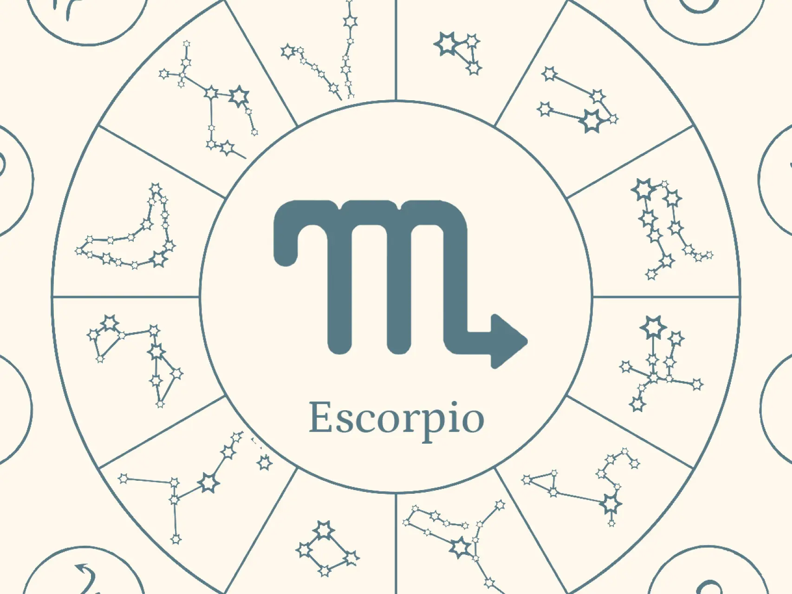
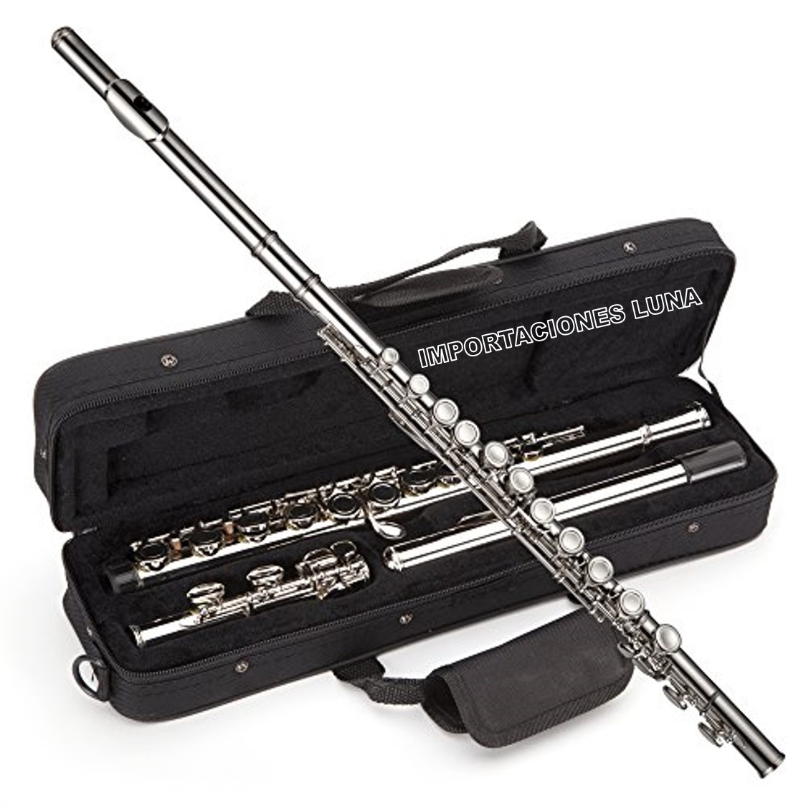
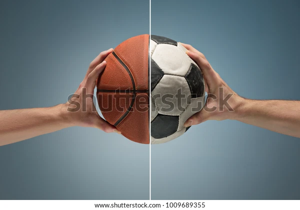
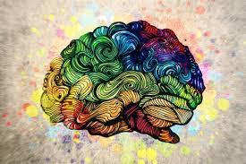

Sobre mí — Benjamin Palomino
¡Hola! Soy Benjamin Azarias Palomino Rivadeneyra, estudiante de Ciencias de la Computación en la Universidad Católica San Pablo (UCSP). Desde pequeño, mi curiosidad por la tecnología y los sistemas ha sido el motor de mis sueños. Actualmente me encuentro inmerso en el fascinante mundo del código, algoritmos y la innovación digital bajo la mentoría del Dr. Ernesto Cuadros-Vargas, reconocido Distinguished Speaker de ACM y referente en educación en computación a nivel mundial [citation:2][citation:3][citation:7].
Me apasiona la programación, la tecnología, los videojuegos y el desarrollo de proyectos. Cada línea de código es una oportunidad para crear algo nuevo, resolver problemas complejos y aportar soluciones que impacten positivamente. Disfruto tanto el desarrollo backend como el frontend, y siempre busco aprender nuevas herramientas y lenguajes. Mis proyectos personales abarcan desde pequeñas aplicaciones web hasta prototipos de videojuegos indie.
Ciudad: UCSP (Universidad Católica San Pablo) — Ubicada en Arequipa, Perú, en la Urb. Campiña Paisajista s/n Quinta Vivanco [citation:1][citation:4]. Vivo y estudio en la Ciudad Blanca, un entorno que inspira creatividad y tradición. Fuera del aula, me gusta participar en hackathones, comunidades de desarrollo y grupos de gaming.
Mi formación en la UCSP me ha permitido desarrollar habilidades en pensamiento computacional, estructuras de datos y desarrollo de software, siempre bajo la guía de excelentes profesionales como el Dr. Ernesto Cuadros-Vargas, quien además es miembro del Steering Committee de ACM/IEEE-CS Computing Curricula [citation:3][citation:6].
Mi Familia — Benjamin Palomino
.jpg)
1Mis Padres
Mi padre se llama Isac, es un hombre algo fuerte, es un poco serio, pero al mismo tiempo es alegre y abierto. Su vida no fue fácil, tuvo muchas dificultades como no tener a su padre y una mala condición económica, por lo que en momentos es muy rígido en algunos aspectos, "Nadie te enseña cómo ser padre", o sino muy condescendiente. Mi madre se llama María, es una mujer dulce y tranquila, aunque a veces se exalta; igual que mi padre tuvo muchas dificultades ya que ella no tuvo a su padre presente. Ambos me apoyan en mi carrera de Ciencias de la Computación en la UCSP.
2Hermanos
Tengo dos hermanos hombres. Mi hermano mayor es alto y de cabello rulado; él es muy inteligente pero del mismo modo es amargo en su forma de ser y hablar cuando no está de buen humor. Mi hermano menor es tierno y amable, pero también es muy molestoso y parlanchín. Juntos compartimos partidas de videojuegos, otra de mis grandes pasiones.
Mi Mentor: Dr. Ernesto Cuadros-Vargas
El Dr. Ernesto Cuadros-Vargas es una inspiración para mí y para toda la comunidad de Ciencias de la Computación en la UCSP. Es Distinguished Speaker de la Association of Computing Machinery (ACM) y exmiembro de la Board of Governors de la IEEE Computer Society [citation:2][citation:3][citation:7].
Obtuvo su PhD en Ciencias de la Computación en la USP-Brasil con proyectos colaborativos en CMU (USA) y TU-Berlin (Alemania) [citation:3]. Fue miembro fundador de la Sociedad Peruana de Computación y ha sido un pilar fundamental en el desarrollo de estándares curriculares globales como miembro del Steering Committee de ACM/IEEE-CS Computing Curricula [citation:3][citation:6].
Actualmente es Head of the School of Computer Science en la UCSP y también en UTEC (Lima) [citation:3]. Su labor como educador y mentor ha inspirado a cientos de estudiantes a nivel nacional e internacional. Puedes seguir su trabajo y sus publicaciones en su perfil de LinkedIn y en su perfil oficial de IEEE Computer Society [citation:2][citation:3].

Álbum de Benjamin Palomino
Mi familia

Signo Zodiacal
Camino Neocatecumenal

Instrumento favorito

Deportes
.jpg)
Colegio
.jpg)
Jugador favorito
.jpg)
Jugador favorito
Mis Cursos Favoritos en la UCSP
Matemática para Ciencias
Me encanta el curso de matemáticas porque potencia mi pensamiento lógico y abstracto, esencial para la programación y desarrollo de proyectos. Como estudiante de Ciencias de la Computación, las matemáticas son la base de algoritmos eficientes.

Arte y Música
Específicamente me gusta el canto, quisiera aprender a cantar con técnica vocal, y la música porque toco la flauta traversa. Esta creatividad complementa mi perfil tecnológico.
Programación y Estructuras
Mi curso estrella, impartido bajo la visión del Dr. Ernesto Cuadros-Vargas. Aquí desarrollo videojuegos, aplicaciones y proyectos innovadores. La pasión por la tecnología y los videojuegos se convierte en retos reales.
Amigos & Comunidad Tech
Nick
Nick es un gran amigo, muy amable y gracioso. Compartimos proyectos de programación y también partidas de videojuegos. Siempre motiva a Benjamin a seguir innovando.
Sergio
Sergio es mi amigo porque es muy hablador y carismático. Juntos asistimos a eventos de tecnología en la UCSP y participamos en hackathones.

Alexei
Alexei es mi amigo porque es solidario y divertido, aunque un poco rencoroso (lo quiero igual). Con él exploramos nuevos lenguajes y frameworks.
Pasiones de Benjamin: Programación, Videojuegos y Tecnología
Programación
Python, JavaScript, C++ y desarrollo web. Benjamin Palomino disfruta construyendo soluciones desde cero.
Videojuegos
Apasionado de los RPG, estrategia e indies. Además, crea pequeños juegos en Unity como parte de su portafolio.
Desarrollo de Proyectos
Lidera equipos estudiantiles en la UCSP para apps con impacto social. La innovación es su sello.